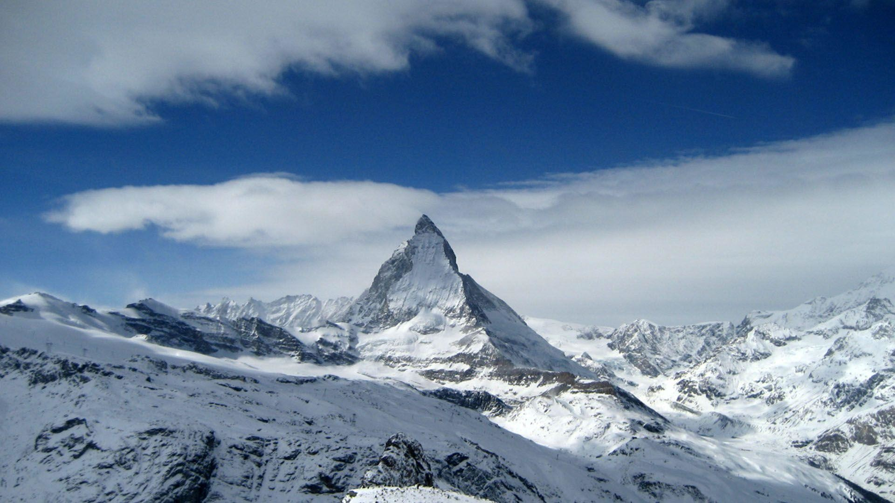

Optionnel
La Tourisme
La Tourisme en Suisse
-
La meilleure saison pour voyager en Suisse est au printemps et en automne.
-
Deux attractions touristiques sont le Jungfraujoch qui est un observatoire tout en haut dans les Alpes
et i'Interlaken qui est une station estivale au pied des Alpes.
-
Les autres attractions touristiques son le Cervin qui est l'un des montagnes dans les Alpes et la Lucerne qui est une
ville médiévale et c'est très belle aussi.
